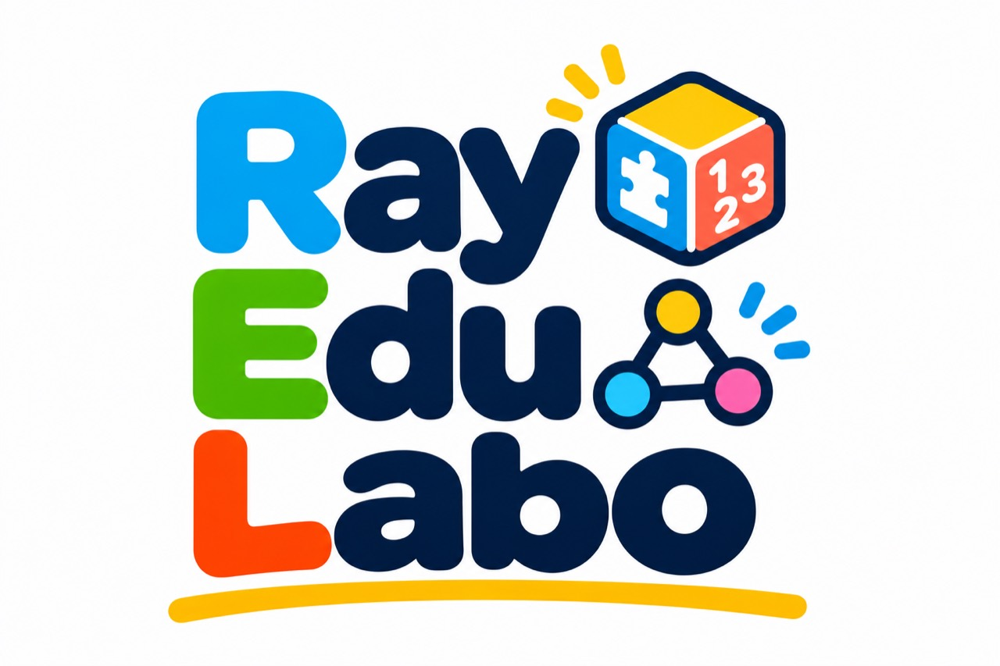

サイコロで すすみ、パズルで ひらくふしぎな ぼうけんのたび
⚠ 属性が おおいよ！つなぐのは むずかしいけど、消すと 高火力！
3属性以上で パーティーを くもう！
同じマークを3つ以上なぞろう！
① サイコロで双六を進みます。② 30秒のパズルで攻撃パワーをためよう。③ 同じ属性を3個以上なぞって離すとパワーアップ。④ 2秒以内に次を消すとコンボ倍率アップ。⑤ 時間が終わったら一斉攻撃！ 倒すと捕獲チャンス。
弱点はダメージ2倍。編成していない属性でも小さなダメージを与えられます。ダブり捕獲は通常ボール2個に交換。トレーナー勝利でスーパーボールを獲得します。
ポケコロジャーニー